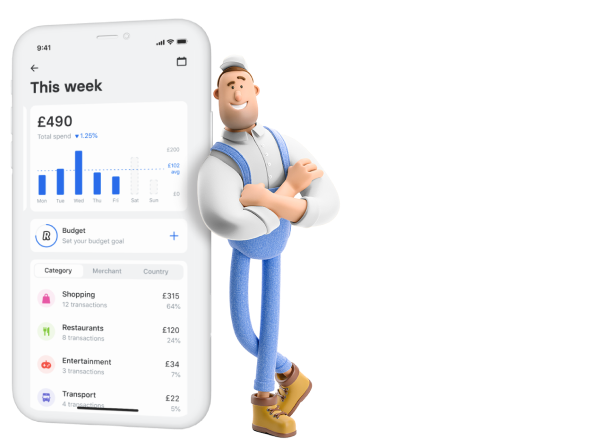
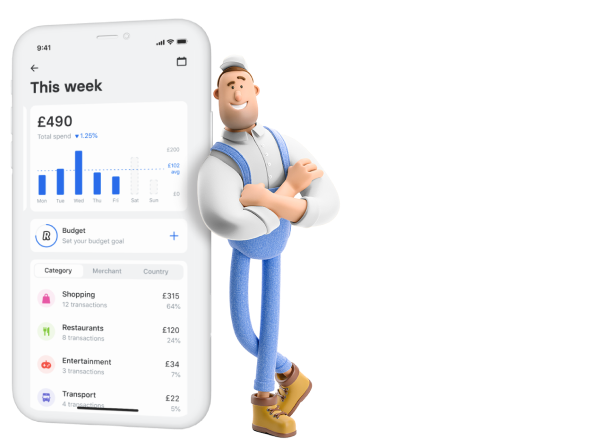

Как это работает

Прочитай задание внимательно
Думаю у тебя не займет это больше двух-трех минут

Изучи весь макет заранее
Подумай как это будет работать на разных разрешениях и при скролле

Сделай хорошо
Чтобы мы могли тебе доверить подобные задачи в будущем

Получи предложение
Ну тут все просто, не я придумал правила, но думаю так и будет)))
Круто, ты дошел до третьего блока
63% опрошенных пользовались кредитами из-за того, что не могли покрыть непредвиденные расходы свыше 15 000 ₽.
Доступ к заработанным деньгам помогает отказаться от кредитов и экономить деньги на процентах и штрафах.
 
